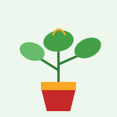
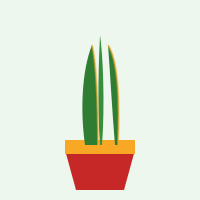
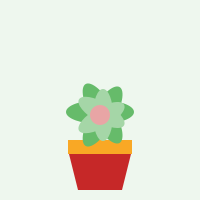

Potos

InformaciónElegí una categoría para ver las plantas que cultivo y descargar más información en PDF.

Información
Información
InformaciónCompletá el formulario para comunicarte con nosotros.
Este sitio es mantenido de forma personal por quien cultiva y cuida cada una de las plantas presentadas, tanto de interior como de exterior, en su propio jardín.
El objetivo del sitio es compartir la experiencia de cultivo y brindar información básica de cuidado a quienes quieran comenzar su propio jardín en interiores o exteriores.